6.1 Biathlonschießstände
6.1.1 Allgemeines
Die Anforderungen der Schießstandrichtlinien für die Errichtung von offenen Schießständen, insbesondere die Nummern 4.2.1 und 4.5, sind zu beachten. Diese Regelungen werden durch die nachfolgenden besonderen Bestimmungen für Biathlonschießstände ergänzt.
Biathlon ist die Kombination der Sportarten Laufen (mit und ohne Hilfsmittel wie Ski oder Skiroller) und Schießen in einem Wettbewerb. Auf Biathlonschießständen wird auf unterschiedliche Distanzen mit DL- oder KK-Waffen (nur Geschosse aus Blei oder ähnlichem weichen Material mit einer Mündungsgeschwindigkeit von ≤ 380 m/s) geschossen.
Verbleiben die Waffen am Stand, so sind dort entsprechende Gewehrständer vorzusehen. Diese sind möglichst nahe zum Schützenstand in einer Entfernung von ≥ 5 m zum Zuschauerraum zu positionieren.
Bei der Errichtung von Biathlonschießständen sind verschiedene Bauarten zulässig.
In vielen Fällen werden Geländeformationen mit in die Gestaltung einbezogen; hierbei kann sich durch einen steilen Gegenhang ein natürlicher Schießbahnabschluss (Nummer 4.2.5.1) ergeben. Ansonsten ist ein gebauter Schießbahnabschluss (Erdwall, Mauer) vorzusehen.
Die Seitensicherungen sind in der Regel als Erdwälle zu erstellen. Bei der Anordnung von Hochblenden ist darauf zu achten, dass die Sicht der Zuschauer auf die Scheiben möglichst wenig beeinträchtigt wird.
Auf die Zeichnungen unter Nummer 6.1.1.11 wird verwiesen.
6.1.2 Winterbiathlon
6.1.2.1 Gefahrenbereich
Biathlonschießstände für Wettkämpfe werden wegen der notwendigen größeren Kapazitäten und der notwendigen Laufstrecken häufig in schwach besiedelten Gebieten (Nummer 4.5.1) errichtet.
Der zu beurteilende Gefahrenbereich (Nummer 1.1.2.2) beträgt in der Regel in Schussrichtung
| – Blei-Kelchgeschoss 4,5 mm | 250 m |
| – Randfeuerpatrone Kaliber .22 l.r. | 1 300 m |
Bei der Beurteilung des Gefahrenbereiches ist zu prüfen, ob im begründbaren Einzelfall durch die Aufstellung von Sicherheitsposten oder festen Absperrungen Erleichterungen bei der Erstellung von Sicherheitsbauten möglich sind oder gar darauf verzichtet werden darf.
Geschossen wird auf folgende Entfernungen:
| – DL-Waffen | 10 m (± 0,05 m) |
| – LW Kaliber .22 l.r. | 50 m (± 1,00 m) |
| – KW Kaliber .22 l.r. | 25 m (± 1,00 m) |
Die Schießstände müssen Anschluss an diverse Laufstrecken im Gelände haben. Die Laufstrecken sind bei eventuell fehlenden Hochblenden in schwach besiedelten Gebieten nicht durch den Gefahrenbereich zu führen. Biathlonschießstände sind in der Regel nicht überdacht. Zur Vermeidung von Sonnen-, Wind- oder Nebeleinwirkung können Biathlonschießstände jedoch überdacht werden. Die Platzwahl für die Anlage von solchen Schießständen hängt ab von
6.1.2.2 Kapazität
Die Anzahl der Geschossbahnen eines Biathlonschießstandes richtet sich nach der Art der Nutzung (maximal 30).
6.1.2.3 Gestaltung von Biathlonschießständen
6.1.2.3.1 Schützenstand
Der Schützenstand (Basis) ist der Geländestreifen ab der Schieß- bzw. Feuerlinie rückwärts bis zur Betreuerzone. Die Tiefe dieses Streifens beträgt in der Regel 10 m bis 12 m und darf von den Zuschauern nicht betreten werden.
Der gesamte von den Wettkämpfern genutzte Teil muss eben sein.
6.1.2.3.2 Schießrampe
Für den liegenden Anschlag ist die Schießrampe so zu errichten, dass diese mindestens 30 cm über der Schießbahn liegt.
6.1.2.3.3 Einrichtungen
Jede Schützenposition ist in Schussrichtung rechts beginnend zu nummerieren. Dabei ist die jeweilige Position am Schützenstand links und rechts mit der Standnummer durch ein Schild (bei 50-m-Anlage: Abmessungen mindestens 20 cm hoch mit 3 cm Schriftgröße und am Ziel gleich lautend mit einer Tafel 40 cm hoch mit 4 cm Schriftgröße, farblich abwechselnd) zu kennzeichnen.
Am Schützenstand ist für jeden Schützen eine möglichst wasserabweisende rutschfeste Matte (aus Kunststoff oder Naturfasern), Größe mindestens 150 cm x 150 cm, in einer Dicke von 1 cm bis 2 cm aufzulegen.
Die Zu- und Ablaufspur für die Biathleten an die Schützenrampe bzw. Basis heran ist so anzulegen, dass die Schützen ausreichend Platz haben. Dies bedeutet, dass im Abstand von 3 m, gemessen ab der Feuerlinie (Schusslinie) nach hinten, keinerlei Laufspuren angelegt werden dürfen.
6.1.2.3.4 Betreuerzone und Zuschauerraum
Unmittelbar hinter dem Schützenstand ist eine Betreuerzone (Trainerraum) vor den Zuschauern abzugrenzen.
Hinter der Betreuerzone kann eine mindestens 1,50 m tiefe Zone für Medienvertreter über die gesamte Breite des Schießstandes eingerichtet werden.
Der Zuschauerraum ist anschließend an die Betreuer- und Medienzonen anzulegen und sollte der besseren Einsicht wegen nach hinten ansteigen. Durch Abtrennungen ist zu verhindern, dass Zuschauer die Gefahrenbereiche des Schießstandes betreten können.
6.1.2.3.5 Geschossbahn
Die Breite einer Geschossbahn beträgt jeweils 2,70 m bis 3,00 m (ideal 2,75 m).
Die einzelnen Bahnen müssen optisch voneinander getrennt werden, wobei die Markierungen beim Schießen nicht stören dürfen.
Um Windeinflüsse für den Schützen aufzuzeigen, können Windfahnen aufgestellt werden. Diese dürfen nicht größer als 10 cm x 40 cm sein. Es ist ausreichend, wenn diese Windanzeigehilfe an jeder dritten Schießbahn eingerichtet wird, beginnend am Stand 1.
6.1.2.4 Seitensicherung
Die Seitensicherung sollte aus zwei seitlichen Wällen aus steinfreiem Erdmaterial bestehen, deren Höhe mindestens 3,50 m und Böschungsneigung 1:1 beträgt. Zur Reduzierung von Windeinflüssen können auf den Erdwällen noch Windfänge angebracht werden.
Auf der Außenseite müssen Seiten- und Abschlusswälle durch eine Zäunung gegen Betreten gesichert werden.
Sofern bei einem natürlichen Gegenhang keine Seitensicherung errichtet und der Gefahrenbereich nur durch Einzäunungen gesichert wird, muss diese nach Nummer 4.2.1 auf beiden Seiten in einem Winkel von 25°, ausgehend von den jeweils äußeren Geschossbahnen, bei Schießbetrieb gegen Betreten durch Streckenposten gesichert werden. Die Erstellung der Seitensicherung mit Zäunen kommt nur bei gelegentlich genutzten Anlagen in Betracht.
Die Zäunungen müssen den Anforderungen nach Nummer 4.1.1 entsprechen. Die erforderliche Höhe ist bei jeder Schneelage zu gewährleisten. In den Umzäunungen sind Warnschilder nach Nummer 4.1.1 in ausreichender Anzahl anzubringen.
6.1.2.5 Hochblenden
Soweit Hochblenden zu errichten sind, müssen diese nach Nummer 4.2.1 angeordnet werden. Die Baustoffe sind nach Nummer 2.7.2 zu bestimmen.
Die Sicht der Zuschauer auf die Scheiben sollte dabei berücksichtigt werden. Es ist eine entsprechende Berechnung zur Anordnung der Blenden zu erstellen; hierbei ist vom liegenden Anschlag bzw. einer Antragshöhe von 30 cm auszugehen.
6.1.2.6 Schießbahnsohle
Die Schießbahnsohle muss mindestens 30 cm tiefer als der Schützenstand liegen. Sie kann aus Erde oder Sand (Körnung ≤ 3 mm) bestehen und darf keine festen Fremdkörper beinhalten, an denen Ab- und Rückpraller entstehen könnten (z. B. Steine, Fels).
6.1.2.7 Schießbahnabschluss
Das Ende jeder Schießbahn ist durchschusssicher abzuschließen. Die Höhe eines Abschlusswalles oder eines natürlichen Gegenhanges ist mit den übrigen Sicherheitsbauten bzw. Sicherheitseinrichtungen abzustimmen (Nummer 4.2.5).
Es sind wegen der geänderten Scheibensysteme keine Anzeigerdeckungen mehr erforderlich. Soweit solche noch vorhanden sind, müssen diese den Anforderungen nach Nummer 4.2.6 genügen.
6.1.2.8 Geschossfangsysteme
Vor dem Schießbahnabschluss muss ein geeignetes Geschossfangsystem vorgesehen werden; hierzu zählen auch Füllungen bei natürlichen Gegenhängen oder in Erdwällen (siehe Nummer 4.2.5.1).
Bei Schießständen für DL-Waffen dienen in der Regel die Metallgehäuse für die Klappscheiben gleichzeitig als Geschossfangeinrichtung, die direkt vor der durchschuss- und rückprallsicheren Abschlusswand zu platzieren sind.
Bei Biathlonschießständen für KK-Waffen ist es erforderlich, einen Geschossfang unmittelbar hinter den Scheibensystemen zu erstellen, unabhängig davon, ob der weitere Gefahrenbereich durch einen gebauten Schießbahnabschluss wie Erdwall bzw. Mauer oder durch einen natürlichen Gegenhang sicherheitstechnisch gedeckt ist. Ein Fangdach nach Nummer 4.2.5.5 ist hier vorzusehen.
6.1.2.9 Scheiben
Für das Trainings- und Wettkampfschießen werden folgende Scheiben eingesetzt:
Die Scheibenhöhen sind wie folgt festgelegt:
| – 10-m-Stände liegend | 0,35 m (± 0,05 m) |
| – 10-m-Stände stehend | 1,40 m (± 0,05 m) |
| – 25-m-Stände | 1,40 m (± 0,10 m) |
| – 50-m-Stände | 0,80 m bis 1,00 m |
Der Hintergrund muss bei 50-m-Schießständen vom Boden bis 100 cm über der Oberkante der Scheibe weiß sein.
6.1.2.10 Zeichnungen
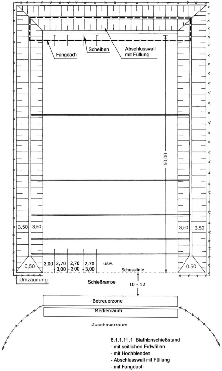
Abbildung 6.1.2.10.1
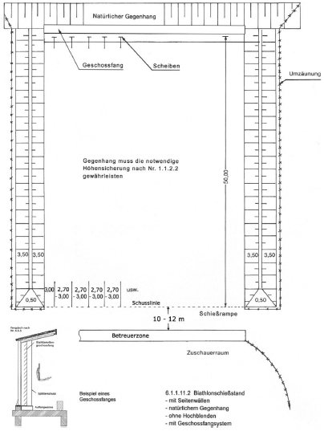
Abbildung 6.1.2.10.2
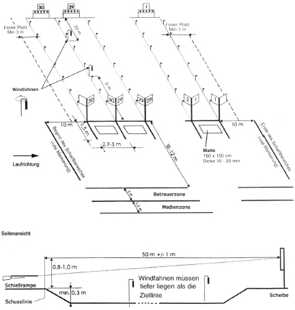
Abbildung 6.1.2.10.3
6.1.3 Sommerbiathlon
Sommerbiathlon wird mit DL-Langwaffen auf eine Scheibenentfernung von 10 m sowie mit LW im Kaliber .22 l.r. auf 50 m Entfernung geschossen.
6.1.3.1 50-m-Schießstände
Die 50-m-Schießstände entsprechen hinsichtlich der technischen Ausstattung den Winterbiathlonständen (6.1.1).
6.1.3.2 10-m-Schießstände
Sofern bereits bestehende ortsfeste Schießstätten genutzt werden, bestimmen die örtlichen Verhältnisse die mögliche und zulässige Nutzung. 10-m-Sommerbiathlon-Schießstände werden oft nur kurzzeitig im Freien errichtet, hier soll der notwendige bauliche Aufwand möglichst gering gehalten werden.
6.1.3.2.1 Schützenpositionen
Die Breite einer Geschossbahn bzw. Schützenposition darf ein Mindestmaß von 1,50 m nicht unterschreiten (gem. Sportordnung für Wettkämpfe 2,20 m bis 3,00 m).
Die sonstige Ausstattung der Schießstätte muss den Vorgaben nach Nummer 2.3.8 entsprechen.
6.1.3.2.2 Scheiben
Es werden handelsübliche Klappscheibenanlagen oder Papierscheiben benutzt. Unter den Scheibensystemen aus Stahl ist der Boden mit Folien o. Ä. abzudecken, damit die herabfallenden Geschosse bzw. Geschossreste aufgesammelt werden können.
Die Scheibenhöhen sind wie folgt festgelegt:
6.1.3.2.3 Seitensicherung und Hochblenden
Sofern je nach Ausweisung des Gefahrenbereiches Seitensicherung und Hochblenden erforderlich sind, können diese aus sog. Geotextilien für den Erd- und Straßenbau aus Polypropylenfasern erstellt werden. Die Masse pro Flächeneinheit des Materials sollte über 300 g/m2 liegen. Die Durchschusssicherheit ist vom SSV durch Beschuss zu prüfen, wenn sie nicht anderweitig nachgewiesen ist.
6.1.3.2.4 Abschlusswand
Gemäß Nummer 3.2.2 muss auch bei der Errichtung einer provisorischen Schießstätte in schwach besiedelten Gebieten nach Nummer 4.5 die Schießbahn mit einer Wand der Höhe ≥ 2,00 m abgeschlossen werden.
Diese kann aus den genannten Geotextilien allein oder aus einer Holzabschlusswand errichtet werden, vor der dann die Geotextilien oder gleichwertige (Nummer 2.7.4) Materialien vollflächig mit einem Abstand von mindestens 50 mm als Rückprallschutz abgehängt werden.
6.1.3.2.5 Zeichnung
Die beispielhafte Gestaltung einer Sommerbiathlon-Schießanlage ergibt sich aus der folgenden Abbildung.
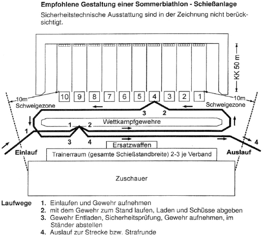
Abbildung 6.1.3.2.5
6.2 Beschießen von Zielobjekten aus Stahl
Zielobjekte aus Stahl werden als sog. "Pepper Popper" bzw. "Falling Plates" (Stahlplatten) bezeichnet und mit KW und LW beschossen. Das vergleichbare Silhouetten-Schießen ist unter Nummer 6.3 beschrieben.
Stahlziele können in offenen und geschlossenen Schießständen verwendet werden. Die Bestimmungen der Nummern 2, 4 und 5 sind heranzuziehen. Beim Beschießen von Stahlzielen in offenen Schießständen ist zu gewährleisten, dass weder Geschosse noch Materialsplitter den Schießstand verlassen können. In RSA ist die äußere Sicherheit gegeben.
6.2.1 Abmessungen und Material für Stahlplatten
Nach schießsportlichen Regeln werden runde Stahlplatten mit einem Durchmesser bis 305 mm und längliche Stahlplatten mit maximal 894 mm Höhe (Abbildung 6.2.6) verwendet. Die Zielobjekte sind klappbar in Gelenken sowie Scharnieren gelagert oder stehen lose in Haltern. Die Stahlplatten müssen im Bezug auf ihre Dicke und Materialgüte den Belastungen durch die auf der jeweiligen Schießstätte zugelassenen und zum Stahlzielbeschuss verwendeten Waffen- und Munitionsarten angepasst sein.
Folgende Materialvorgaben beim Beschuss im Winkel von 90° zur jeweiligen Schützenposition sind zu beachten:
| KW bis | 200 J | Dicke ca. 5 mm Zugfestigkeit > 1 000 N/mm2 |
| KW bis | 1 500 J | Dicke ca. 10 mm Zugfestigkeit > 1 000 N/mm2 |
| LW23 bis | 5 000 J | Dicke ca. 12 mm Zugfestigkeit > 1 400 N/mm2 |
| Flinten24 | Dicke ca. 8 mm Zugfestigkeit > 1 000 N/mm2 |
Die o. a. Vorgaben gelten für das Schießen mit KW auf Entfernungen von 7 m bis 25 m und bei LW23 bis 50 m. Bei Zielen, die nur auf größere Entfernungen beschossen werden, dürfen Platten geringerer Dicke verwendet werden. Dies gilt ebenso bei schräg geneigten Stahlplatten (Neigungswinkel 60° in Schussrichtung oder geringer).
Das verwendete Material muss aufgrund seiner Güte geeignet sein, eine Kraterbildung durch die auftreffenden Geschosse zu verhindern.
Eingerissene oder durchgebogene Stahlziele, ebenso perforierte oder solche mit starker Kraterbildung, dürfen nicht mehr beschossen werden. Bei Störungen der Fall- bzw. Klappmechanik dürfen diese Zielobjekte nicht mehr beschossen werden. Sofern gefährliche Rückpraller von den defekten Zielobjekten nicht auszuschließen sind, müssen sie entfernt werden.
6.2.2 Zielanordnung
Die Zielobjekte stehen einzeln oder zu mehreren (bis zu 20 Stück) neben- oder hintereinander. Die Platten fallen bei Treffern je nach Konstruktion vorzugsweise nach hinten, aber spezielle "Pepper Popper" auch nach vorne.
Die Stahlziele sind unmittelbar (max. 1 m entfernt) vor den Geschossfängen des Schießstandes aufzustellen. Diese Geschossfänge müssen konstruktiv bzw. aufgrund ihrer Materialbeschaffenheit und -auswahl geeignet sein, auch langsame und energieschwache Geschossfragmente aufzunehmen.
Bei offenen Schießständen muss der Geschossfang immer ein Fangdach (Nummer 4.4.6) aufweisen, das über die aufgestellten Stahlziele in Richtung der Schützen reichen muss.
6.2.3 Splitterschutz
Ein umlaufender Splitterschutz zum Auffangen seitlich und nach oben von den Stahlzielen abprallender Geschossteile ist um jedes Stahlziel vorzusehen, soweit dieses nicht unter einem Fangdach aufgestellt wird. Dieser Schutz darf aus Weichholz der Dicke ≥ 5 cm, Stahlblech der Dicke ≥ 2 mm oder genügend dickem Gummi (z. B. aus Förderband) bestehen. Ein Splitterschutz der seine Funktion nicht mehr erfüllt (z. B. wegen Beschädigung) ist auszuwechseln.
Dem Schützen zugekehrte und feststehende Metallteile (z. B. die Sockelkonstruktion) sind rückprallsicher zu bekleiden.
Die Schützen und Standaufsichten müssen PSA (z. B. Gehörschutz und Schutzbrillen) tragen. Das Tragen von Brillen ist mit einem Gebotszeichen nach DIN 4844 im oder am Schützenstand gut sichtbar vorzuschreiben.
6.2.4 Schussentfernung
Die zulässigen minimalen Schussentfernungen richten sich nach der Art der verwendeten Waffen und Munition unter Einhaltung sicherheitsrelevanter Erfordernisse und betragen:
| KK | > 5 m |
| KW | > 7 m |
| LW | > 30 m |
| Schrot | > 5 m |
6.2.5 Ausschluss von Vollgeschossen
Die Verwendung von Vollgeschossen aus Messing, Kupfer oder Tombak ist beim Beschießen von Stahlplatten nicht zulässig.
6.2.6 Zeichnungen
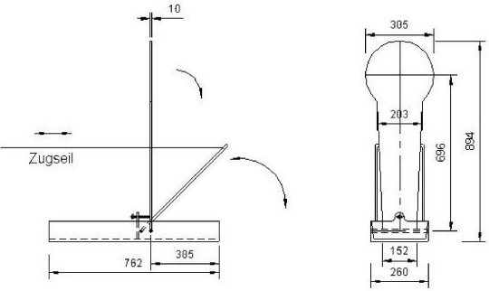
Abbildung 6.2.6 Abmessungen eines "Pepper Popper"
6.3 Silhouetten-Schießen
6.3.1 Abmessungen und Material für Stahlplatte
Beim Silhouetten-Schießen wird auf spezielle Stahlziele in Tierform (Huhn, Schwein, Truthahn, Widder) auf unterschiedliche Entfernungen geschossen. Die Entfernungen betragen in den Disziplinen Kleinkaliber und Feldpistole25 25 m, 50 m, 75 m und 100 m; in der Disziplin Großkaliber 50 m, 100 m, 150 m und 200 m. Aufgrund dieses Umstandes sind Geschossfangeinrichtungen auf die genannten Zwischenentfernungen erforderlich. Vor diesen werden die Silhouetten in einer Reihe in Gruppen zu jeweils fünf Stück (Bank) und eventuell mit einer Silhouette als Probesilhouette aufgestellt.
Zum Ablauf der Schießübungen wird auf das jeweilige Regelwerk (z. B. BDS-IPSC, IMSSU, AETSM) verwiesen, wobei grundsätzlich die folgenden Punkte beachtet und ggf. im Einzelfall mit einem SSV abgestimmt werden sollten.
Schussentfernungen unter 25 m bei KK- und Feldpistole-Disziplinen sowie unter 50 m bei den GK-Disziplinen sind nicht zulässig. Alle Personen, die sich während des Schießens im Schützenstand aufhalten, müssen geeignete Schutzbrillen gemäß DIN EN 166 tragen. Das Tragen von Brillen ist mit einem Gebotszeichen nach DIN 4844 im oder am Schützenstand gut sichtbar vorzuschreiben.
6.3.2 Schützenstand/-positionen
Der Schützenstand soll überdacht sein. Es soll eine Brüstung von 1,00 m Höhe vorhanden sein, hinter der im stehenden Anschlag oder im sog. Freistil-Anschlag von Pritschen aus geschossen wird.
Die Schützenpositionen müssen aus schießsportlichen Gründen 1,50 m breit und 2,50 m tief sein. Die Positionen der Schützen werden entsprechend den zu beschießenden Zielen bezeichnet (z. B.: SB/P = small bore/pig = Kleinkaliber/Schwein). Von einer bestimmten Position darf nur auf eine bestimmte Zielgruppe (Bank) geschossen werden.
6.3.3 Schießbahn/-sohle
Die Schießbahnsohle muss den Bestimmungen gemäß Nummer 4.4.2 entsprechen. Seitlich oder in der Mitte der Schießbahn sollte ein Weg für die Zielaufsteller vorgesehen werden. Dieser darf nicht mit Steinplatten oder dgl. befestigt werden.
6.3.4 Zielobjekte
6.3.4.1 Abmessungen und Material
Die Abmessungen der Silhouetten werden in den speziellen technischen Regelwerken beschrieben (Abbildung 6.3.6.1). Als Material für die GK-Disziplinen und für die Feldpistole sollten nur flüssigkeitsgehärtete Verschleißstähle verwendet werden, deren Zugfestigkeit über 1 200 N/mm2 und die mittlere Härte über 300 HB liegen.
Die Silhouetten für die KK-Disziplinen dürfen aus Material geringerer Zugfestigkeit und Härte hergestellt sein.
Die Dicke der Ziele darf für die KK-Disziplinen nicht weniger als 6 mm bzw. für die Feldpistole- und GK-Disziplinen 12 mm bei Schweinen und Hühnern und 10 mm für Truthähne und Widder in der genannten Güte betragen.
Silhouetten mit Durchschüssen und starker Kraterbildung (Tiefe des Kraters größer als 25 % der Materialdicke) dürfen nicht mehr beschossen werden. Sie sind zu entfernen, falls gefährliche Geschossrückpraller nicht ausgeschlossen sind.
6.3.4.2 Zielanordnung
Die Ziele sind in Gruppen zu 5 Silhouetten (Bank) anzuordnen; für jede Entfernung ist mindestens eine Probesilhouette vorzusehen. Die Positionen der Bänke müssen so gewählt werden, dass ein Fehlschuss entweder im Geschossfang hinter der betreffenden Bank oder dem entsprechenden Geschossfang am Abschluss der Schießbahn aufgefangen wird.
Für die unmittelbar hinter den auf Zwischenentfernungen stehenden Silhouetten anzuordnenden Geschossfänge dürfen bei den Disziplinen im Kaliber .22 l.r. mit Bleigeschossen transportable, nach hinten unten geneigte Abweisbleche mit einer Dicke von 6 mm und einer Mindestzugfestigkeit von 300 N/mm2 verwendet werden. Diese müssen an der Oberkante nach vorne so weit auskragen, dass an der Silhouettenoberfläche abspritzende Geschossteile sicher gefangen werden (Abbildung 6.3.6.2). Durch entsprechende Bereitung des Untergrundes sollte gewährleistet sein, dass das Geschossmaterial aufgenommen werden kann.
Die Gesamthöhe der Geschossfänge richtet sich nach der jeweiligen Silhouettengröße. Die Höhe des waagerechten Fangdachs soll ca. das 1,5-fache der Silhouettenhöhe betragen (Maß "h + ½ h" in Abbildung 6.3.6.2). Es muss von der Vorderseite der Silhouette gemessen mindestens 30 cm nach vorn überkragen.
Der Geschossfang soll eine Neigung von 60° zum Schützen hin aufweisen und so weit hinter den Silhouetten angeordnet sein, dass diese ungehindert nach hinten umkippen können (Maß "t" in Abbildung 6.3.6.2).
Die Aufstellung der Silhouetten erfolgt auf Flachstahl in der Breite des jeweiligen Silhouettenfußes (Maß "s" in Abbildung 6.3.6.2). Die Aufstellung kann auch auf geeigneten Weichholzleisten erfolgen.
Für die GK- und Feldpistole-Disziplinen müssen spezielle Geschossfänge hinter jeder Bank vorgesehen werden, die in der Lage sind, auftreffende Projektile und deren Teile sicher und rückprallfrei aufzunehmen. Dies kann durch eine Bodentraverse aus Erdreich geschehen, bei der die vordere Seite aus einer Sandfüllung besteht, die gegen das übrige Erdreich durch eine Folie abgesichert ist. Zusätzlich muss über den Stahlzielen ein nach hinten geneigter Splitterschutz in Form eines Fangdaches vorhanden sein, dessen vordere Kante zum Geschossfang hin abzuschrägen ist (Abbildung 6.3.6.2).
Das Fangdach soll aus Stahlblech der Dicke ≥ 10 mm mit einer Zugfestigkeit von ≥ 700 N/mm2 bestehen. Seitlich kann das Fangdach auf Holzbohlen der Dicke 5 cm gelagert werden. Silhouetten, die unmittelbar vor dem Abschluss der Schießbahn aufgestellt sind und über die das vorhandene Fangdach zum Schützen hin mindestens 0,50 m hinausragt, müssen nicht mit einem gesonderten Splitterschutz versehen werden.
Die Füße der Silhouetten stehen auf einem in die Schießbahnsohle eingelassenen L-Profil aus Stahl einfacher Güte, das schützenseitig mit Weichholz zu bekleiden ist. Die Silhouetten dürfen auch auf einer Weichholzbohle ausreichender Breite aufgestellt werden.
6.3.5 Gefahrenbereich
Da die Silhouetten überwiegend auf Zwischenentfernungen aufgestellt werden, muss vermehrt mit Aufsetzern auf der Schießbahnsohle gerechnet werden. Aus diesem Grund dürfen Schießen dieser Art bei Frost nicht durchgeführt werden. Außerdem ist darauf zu achten, dass der Gefahrenbereich in Schussrichtung grundsätzlich als schwach besiedelt nach Nummer 4.9 einzustufen ist.
Im Einzelfall hat eine Beurteilung des Gefahrenbereiches durch einen SSV zu erfolgen.
6.3.6 Zeichnungen
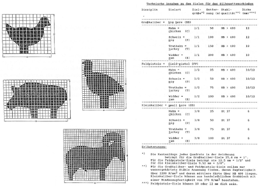
Abbildung 6.3.6.1 Abmessungen von Silhouetten
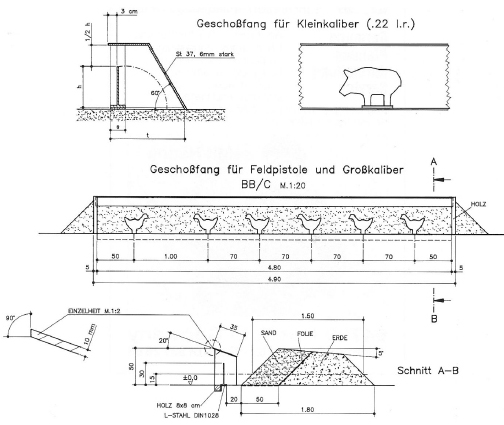
Abbildung 6.3.6.2 Geschossfangeinrichtung für den Silhouetten-Schießstand
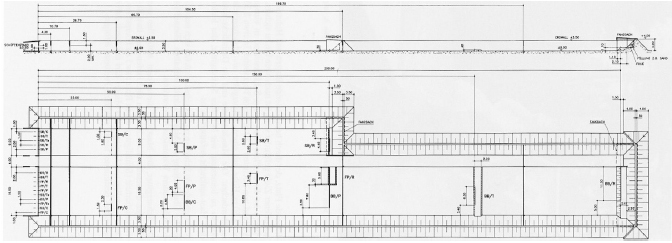
Abbildung 6.3.6.3 Beispiel eines offenen Schießstandes für Silhouetten-Schießen
6.4 Field-Target-Schießen
6.4.1 Grundsätze
Beim Field-Target-Schießen wird mit DL-Waffen (Kaliber bis 6,5 mm) mit einer E0 bis maximal 16 J auf Stahl-Silhouettenziele (Dicke 2 mm bis 4 mm) geschossen. In besonderen Wettbewerbsklassen sind bis zu maximal 27 J zulässig.
Bei dieser aus Großbritannien stammenden schießsportlichen Disziplin stellen die Ziele Silhouetten von Kleintieren in annähernd natürlicher Größe dar (Eichhörnchen, Kaninchen, Elster usw.). Die Ziele können auch geometrische Figuren in vergleichbarer Größe darstellen (Kreise, Ellipsen, Rechtecke usw.).
Die Ziele stehen in Schießbahnen ("Lanes") auf dem Schützen unbekannte Entfernungen zwischen 9 m und 50 m und können sowohl auf den Boden gestellt als auch an Bäumen befestigt werden.
Eine "Lane" kann jeweils 2 bis 6 Ziele enthalten. In den Silhouetten der Ziele sind Löcher (Hit-Zonen) mit dem Durchmesser von 15 mm, 20 mm, 25 mm oder 40 mm. Hinter diesen befindet sich jeweils ein löffelartiges Stahlblechteil ("Paddle"). Dieses ist derart mit der Silhouette verbunden, dass diese bei einem Treffer auf das Paddle nach hinten umklappt. Treffer auf die Silhouette selbst beeinflussen das Ziel nicht. Das gefallene Klappziel wird danach durch einen Seilzug wieder aufgerichtet (Abbildungen 6.4.6.1 bis 6.4.6.6).
Der Schütze beschießt die Ziele von der Feuer- oder Schießlinie am Anfang der "Lane" aus, wobei die Standard-Schießposition "sitzend" ist (andere Positionen können vorgegeben sein). Er muss die Ziele einer "Lane" jeweils in vorgegebener Reihenfolge beschießen, in dem er seine Waffe lädt, das erste Ziel optisch erfasst, die Entfernung bestimmt (evtl. mit Hilfe des Parallaxeausgleichs am Zielfernrohr), den Haltepunkt festlegt und dann den Schuss abgibt. Nur wenn die Silhouette fällt, zählt der Treffer. Das Schießen erfolgt im Wettbewerb in der Regel mit einem Zeitlimit von 1 Minute pro Ziel (beginnend mit dem ersten Blick durch das Okular des Zielfernrohrs). Als Geschosse werden Kelchgeschosse aus Blei, Bleilegierung oder Zinn verwendet.
Mehrere "Lanes" bilden einen sog. Parcours, der aus minimal 6 und maximal 25 "Lanes" mit jeweils 2 bis 6 Zielen besteht.
6.4.2 Gestaltung der Schießlinie
Die Schieß- oder Feuerlinie einer Schießbahn wird durch zwei im Abstand von 1 m eingeschlagene Pfosten ("Lane-Marker") aus beliebigem Material begrenzt. Die Pfosten müssen mindestens 80 cm hoch und farblich deutlich markiert sein. Sie sollen außerdem die Nummer der jeweiligen "Lane" und die Nummern der darin aufgestellten Ziele tragen. Zwischen den Pfosten muss eine deutlich sichtbare Bodenmarkierung vorhanden sein, die der Schütze in keiner Schießposition mit den Füßen berühren darf.
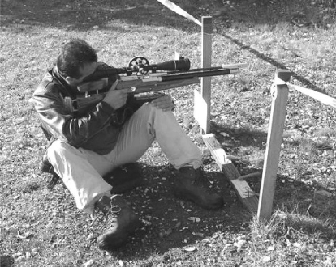
Abbildung 6.4.2 "Lane" mit Schießlinie
Der Gewehrlauf muss sich zwischen den Pfosten befinden, wenn der Schütze in die Anschlagsposition "geht" und so lange dort verbleiben, bis das letzte Ziel der Bahn beschossen wurde. Vorher und nachher muss die entladene Waffe mit einer deutlich sichtbaren Sicherheitssignalvorrichtung versehen werden. Da die Schützen eigene spezielle Gewehrablagen mit sich führen, sind weitere Vorrichtungen nicht erforderlich. Die Enden der Wiederaufrichtschnüre für die Ziele müssen hinter der Feuerlinie liegen oder an in die Pfosten eingeschraubte Haken in Richtung zum Schützen eingehängt sein.
Zuschauer müssen sich in einem Abstand von ≥ 4 m zur Feuerlinie hinter dem Schützen aufhalten. Dieser Bereich ist zu markieren.
6.4.3 Beschaffenheit der Bahnen
Eine "Lane" sollte maximal 5 Ziele enthalten. Diese können mit mindestens 20 cm langen Stahlstiften direkt am Boden befestigt werden. Es empfiehlt sich jedoch, spezielle Zielhalter zu verwenden, auf denen die Ziele aufgeschraubt werden. Solche gibt es in verschiedener Ausführung für Boden und Bäume. Letztere sind als "Seitenausleger" konstruiert, sodass der jeweilige Baum, an dem das Ziel befestigt ist, keine Treffer erhält. Sie werden z. B. mit starken Kabelbindern befestigt. Die Ziele innerhalb einer Bahn müssen so angebracht sein, dass sie sich nicht gegenseitig verdecken und von der Feuerlinie aus sichtbar sind.
Alle Ziele müssen mit deutlich sichtbaren Nummern versehen sein. Die Breite der Bahn darf die Breite der Feuerlinie deutlich übersteigen, soweit gewährleistet ist, dass keine Verwechslung mit Zielen benachbarter "Lanes" möglich ist. Die Leinen zum Wiederaufrichten der Ziele dürfen sich nicht überkreuzen. Es ist mit der zuständigen immissionsschutzrechtlichen Genehmigungsbehörde abzuklären, ob die Ziele mit geeigneten Geschossfängen versehen werden müssen. Es gibt für das Field-Target-Schießen einen universellen Geschossfang, der geeignet ist, weitgehend die Kelchgeschosse und deren Splitter aufzufangen (Abbildungen 6.4.6.2. bis 6.4.6.4).
6.4.4 Anlegen eines Parcours
Ein Field-Target-Parcours besteht aus maximal 25 Bahnen; die Gesamtzahl der Ziele sollte 60 nicht übersteigen. Alle Bahnen müssen fortlaufend nummeriert sein und die Nummern der in ihr aufgestellten Ziele erkennen lassen. Die Zielnummerierung ist fortlaufend von 1 bis zur Höchstzahl der Ziele des jeweiligen Parcours. Die Zwischenräume zwischen den einzelnen Bahnen müssen mit deutlich sichtbaren signalfarbenen Leinen oder Trassierband vollständig abgespannt sein. Zusätzlich zur Absperrung müssen in ausreichenden Abständen deutlich sichtbare wetterfeste Schilder mit der Aufschrift: "ACHTUNG! SICHERHEITSZONE!" aufgestellt werden. Diese Markierung darf nur nach dem Signal "Feuer einstellen" von Aufsichtspersonen oder deren Helfer übertreten werden. Alle Feuerlinien müssen absolut sicher angeordnet sein.
6.4.5 Gefahrenbereich
Die Schießstätte muss für DL-Waffen mit einer E0 von 16 J zugelassen sein. Bei dieser Energie der Kelchgeschosse aus Weichblei besteht selbst bei Silhouettentreffern auf die Minimaldistanz von 9 m nicht die Gefahr von rückprallenden Geschossresten, da die Projektile entweder sich zu Plättchen verformen oder vollständig zerlegen. In einem Schießversuch wurde ermittelt, dass mit einer E0 von 16 J bei einem Abgangswinkel von 30° eine maximale Flugweite der Geschosse von ca. 180 m erreicht wird. In offenem Gelände mit einem abgesperrten Gefahrenbereich von 250 m (Nummer 4.2.1) von der Schießlinie aus gemessen sind daher keine Hochblenden erforderlich.
Die Ausweisung eines Gefahrenbereiches hat den Vorgaben nach Nummer 4.2.1 zu entsprechen. Bei kürzeren Sicherheitszonen hat eine einzelfallbezogene Beurteilung des Gefahrenbereiches durch einen SSV zu erfolgen.
6.4.6 Abbildungen
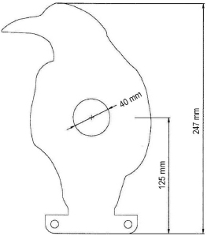
Abbildung 6.4.6.1 Beispiel einer Field-Target-Silhouette
Abbildung 6.4.6.1 zeigt eine Field-Target-Silhouette (Krähe) mit 40 mm "Hit-Zone" und Flansch, dessen seitlich herausragende Teile um 90° zurückgebogen werden, um einen Teil des Kippgelenks zu bilden.
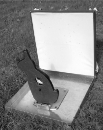
Abbildung 6.4.6.2 Seitenansicht eines Field-Target-Geschossfanges
Der standardmäßige Field-Target-Geschossfang besteht aus 2 mm dickem Stahlblech. Vor der Rückwand ist eine Kunststofffolie gespannt, die auftreffende Bleigeschosse bzw. deren Fragmente zurückhält.
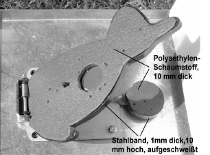
Abbildung 6.4.6.3 "Gepolstertes” Field-Target-Silhouettenziel
In Abbildung 6.4.6.3 sind die Silhouette und das "Paddle" derart mit 1 mm dickem und 10 mm hohem Stahlband umschweißt, dass beide unten offen sind. In die Umschweißung wird 10 mm dicker Polyäthylenschaumstoff (PE-Schaumstoff) eingepasst. Hinter diesem zerlegen sich die Bleigeschosse oder verformen sich zu dünnen Plättchen. Das Blei fällt dann durch die untere Öffnung der Umschweißung in den Sammelkasten. Der PE-Schaumstoff wird für Training und Wettbewerbe mit Farbe besprüht. Eine "Füllung" übersteht ca. 10 Wettbewerbe.
| Vorderansicht | Seitenansicht |
|
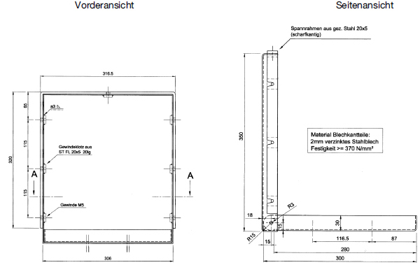 | |
Abbildung 6.4.6.4 Abmessungen eines Field-Target-Geschossfanges
6.5 Schießstände zum Schießen zur Belustigung
6.5.1 Allgemeine Bestimmungen
Ortsveränderliche Schießstätten, die dem Schießen mit Schusswaffen zur Belustigung dienen, bezeichnet man als sog. "Fliegende Bauten". Es handelt sich dabei zum einen um bauliche Anlagen, die geeignet und bestimmt sind wiederholt an wechselnden Orten aufgestellt und zerlegt zu werden (z. B. sog. Schießbuden) und zum anderen um nicht zerlegbare, aber ortsveränderliche und wiederholt aufstellbare geschlossene Einheiten (z. B. Schießwagen).
Diese ortsveränderlichen Schießstätten bedürfen in der Regel keiner Ausführungsgenehmigung, wenn sie als fliegende Bauten eine Höhe ≤ 5 m besitzen und nicht dazu bestimmt sind, von Besuchern betreten zu werden. Auf die entsprechenden landesrechtlichen Bestimmungen und die DIN EN 13814 wird hingewiesen.
Solche Schießstätten bestehen meist aus drei durchschusssicheren Wänden und Dach, wobei eine Längswand als Abschluss der Schießbahnen ausgebildet ist, während die beiden Seitenwände den seitlichen Zutritt zu den Schießbahnen verhindern sollen. Die offene vierte Seite wird von einer tischartigen Brüstung (Schießtisch) abgeschlossen, die die Schützenpositionen von der Schießbahn bzw. dem inneren Schießraum trennt.
Der Boden des Schützenstandes muss den Schützen festen Stand bieten. Das Dach soll so weit über die Schützenpositionen reichen, dass kein Geschoss den Schießstand nach oben verlassen kann.
6.5.2 Zugelassene Waffen und Geschossarten
Als Schusswaffen dürfen DL-Waffen mit einem Kaliber bis zu 5,5 mm mit einer E0 bis 7,5 J und die eine entsprechende Kennzeichnung gemäß Abbildung 10 in Anlage II zur Beschussverordnung (sog. "F"-Zeichen) aufweisen sowie DL-Waffen, die vor dem 1. Januar 1970 oder in dem in Artikel 3 des Einigungsvertrages genannten Gebiet vor dem 2. April 1991 hergestellt und entsprechend den zu diesem Zeitpunkt geltenden Bestimmungen in den Handel gebracht worden sind (siehe Anlage 2, Abschnitt 2, Unterabschnitt 2, Nummer 1.2 WaffG).
KW bis zu einer Gesamtlänge von 60 cm dürfen nur dann verwendet werden, wenn sie in ihrem Schwenkbereich so begrenzt sind, dass nicht aus dem Schießraum herausgeschossen werden kann. Die Waffen dürfen keinen Stecher besitzen und müssen so beschaffen sein, dass ein Schuss nicht schon durch geringe Erschütterungen ausgelöst wird. Bei LW (Gewehren), bei denen zur Abgabe weiterer Schüsse ein Spannen oder Durchladen von Hand nicht erforderlich ist, muss das Schießen von den Bedienungspersonen durch eine Vorrichtung unterbrochen werden können.
Es dürfen nur handelsübliche Weichbleigeschosse (Rundkugeln oder sog. Diabologeschosse) verwendet werden. Die Kugeln dürfen einen galvanisch (verkupferten) Überzug aufweisen. Ein entsprechender Aushang mit den zugelassenen Waffen- und Geschossarten ist in der Schießstätte an gut sichtbarer Stelle anzubringen.
Bei im Rahmen von sicherheitstechnischen Überprüfungen eventuell durchzuführenden Beschussversuchen sind nur die Waffensysteme bzw. Schusswaffen heranzuziehen, mit denen in der Schießstätte tatsächlich geschossen wird. Die Waffen sind im Prüfprotokoll hinsichtlich Waffensystem, Hersteller, Modell und Kaliber detailliert festzuhalten.
6.5.3 Beschaffenheit des Schießraumes
Schießräume müssen nach beiden Seiten, in Schussrichtung und nach oben geschlossen gebaut sein. Sie müssen so beschaffen sein, dass Geschosse, auch dann, wenn sie ihr Ziel verfehlen oder im Geschossfang nicht aufgenommen werden, den Schießraum nicht verlassen können. Durch bauliche Maßnahmen ist dafür zu sorgen, dass niemand durch ab- bzw. rückprallende Geschosse verletzt werden kann. Der Schießraum ist gegen unbefugtes Betreten zu sichern; Türen in den Seitenwänden müssen von innen absperrbar sein.
Elektrische Einrichtungen im Schießraum müssen wegen der Gefahr von Kurzschlüssen vor direkten Schüssen geschützt werden (z. B. keine beschießbaren Strom führenden Leitungen sowie nicht abgedeckte Schalter und Steckdosen). Als durchschusssichere Abdeckung ist Stahlblech der Dicke ≥ 2 mm (Nummer 6.5.3.6) zu verwenden. Die Beleuchtung im Schießraum und über den Schützen muss mit einer transparenten rückprallsicheren Abdeckung versehen sein, damit keine Gefährdungen von Schützen und Bedienungspersonal durch herabfallende Splitter entstehen können, oder beschusssicher verblendet werden. Splittersichere Glühlampen mit einer Abdeckung aus Polycarbonat (auch sog. Acrylglas grundsätzlich möglich) sind zulässig.
Die im Schießraum gelagerten Gegenstände (auch Gewinne, Preise), soweit sie von Schüssen erreicht werden können, müssen rück- und abprallsicher beschaffen sein (nur weiche oder lose gelagerte kleine Gegenstände, keine harten, runden Gegenstände wie zum Beispiel Flaschen, Gasflaschen oder Kunststoffbehälter). Ansonsten sind die o. g. Gegenstände über Schießtischhöhe so zu schützen, dass sie nicht zu gefährlichen Rückprallern führen können.
Spanplatten oder federnde Kunststoffbeläge ohne Stahlblechbeschlag (für Abdeckungen, Regale, Schubladen u. Ä.) sind bei Einbauten unzulässig, weil durch diese Materialien eine erhebliche Gefahr besteht, dass Geschosse gefährlich zu den Schützen zurückprallen. Diese Materialien sind allenfalls bei waagerecht und parallel zur Schussrichtung stehenden Einbauten, wie z. B. Ablageflächen, zulässig (nur bei Beschlag der Kanten mit Stahlblech der Dicke ≥ 2 mm).
Ebenso sind Abdeckungen von Bemalungen oder Beschriftungen durch transparente dünne Kunststoffplatten nicht zulässig.
6.5.3.1 Abschlusswand der Schießbahn
Die Abschlusswand der Schießbahn (Rückwand des Schießraumes) muss senkrecht und aus fugenlos aneinander gefügten Weichholzbrettern oder gleichwertigen durchschusssicheren Materialien der Dicke ≥ 2 mm bestehen. Im Bereich der Zielobjekte ist die Abschlusswand auf der den Schützen zugekehrten Seite durch ein Stahlblech der Dicke ≥ 1,5 mm zu verstärken (vorzugsweise kaltgewalztes Feinblech in Tafeln, mit geschnittenen Kanten, Güte DC 01 nach DIN EN 10130 (Nummer 6.5.3.6)). Sofern die Zielobjekte nicht bis zu den Seitenwänden oder die Decke heranreichen, muss das Stahlblech den Zielbereich um mindestens 50 cm überdecken.
Befinden sich vor der Abschlusswand Vorrichtungen zum Anbringen von Zielgegenständen (z. B. Röhrchen zum Aufstecken von Blumen), dann sind im Abstand von ≥ 5 cm vor der Rückwand Stoffbahnen (z. B. Wollstoff, Zeltstoff oder Jute) lose aufzuhängen oder andere geeignete Vorrichtungen anzubringen, die ein gefährliches Rückprallen von Geschossen verhindern (z. B. Lamellen- oder Trichtergeschossfang aus Stahlblech nach Nummer 2.8.5.1.1).
Werden dagegen Zielgegenstände unmittelbar an der Rückwand angebracht oder können aus anderen Gründen lose Stoffbahnen zwischen Zielgegenstand und Rückwand nicht aufgehängt werden, muss die Rückwand so beschaffen sein, dass rückprallende Geschosse oder Teile der Zielgegenstände, die eine Gefährdung von Personen bedingen, nicht auftreten können.
Soweit beim Fotoschießen transparente Abdeckungen von Kameras und Blitzleuchten vorhanden sind, müssen sie so beschaffen und angebracht sein, dass sie nicht zersplittern und Geschosse nicht gefährlich zurückprallen können.
6.5.3.2 Seitenwände und Dach
Die Seitenwände des Schießraumes müssen so beschaffen sein, dass durch ein Weichbleigeschoss beim Auftreffen in einem Winkel von 90° die Wand nicht durchschossen wird und dass außerdem bei einem Aufprallwinkel bis zu 45° der Abprallwinkel 45° nicht übersteigt. Diese Forderungen werden, bezogen auf einen kritischen Durchmesser von 4,5 mm und eine E0 von 7,5 J, durch Seitenwände aus folgenden Baustoffen erfüllt:
Vor Seitenwänden aus Werkstoffen (z. B. profilierten Stahlblechen), bei denen bei einem Auftreffwinkel von 45° der Abprallwinkel größer als 45° sein kann, müssen Stoffbahnen oder dergleichen angebracht werden, um Gefährdungen durch mehrfaches Abprallen der Geschosse zu unterbinden.
Zur Sicherung (Rück- bzw. Abprallschutz) nach oben genügen unterhalb des Daches angebrachte Behänge aus Stoff oder einem anderen Gewebe gleicher Güte oder Vorrichtungen entsprechender Wirksamkeit (z. B. Zwischendecke auf Abstand montiert aus dünnen Polycarbonatplatten, Gipskarton etc.).
6.5.3.3 Pfosten und Ständer
Pfosten, Ständer und dgl. müssen, soweit sie nicht am Schießtisch angeordnet sind (z. B. zur Befestigung der Röhrchenhalter), einen rechteckigen Querschnitt haben und, sofern sie nicht aus Stahl bestehen, mit Stahlblech der Dicke ≥ 2 mm (Nummer 6.5.3.6) beschlagen sein. Innerhalb des freien Schießraumes dürfen sich keine Pfosten, Ständer und dgl. befinden. Regale über Schießtischhöhe müssen aus weichen Werkstoffen bestehen oder entsprechend bekleidet sein.
6.5.3.4 Schießtische (Brüstung)
Schießtische sind unverrückbar zu befestigen. Die dem Schützen zugekehrte Seite bzw. Kante des Tisches muss mindestens 2,40 m vom Ziel entfernt sein.
Schießtische sollen zwischen 40 cm und 75 cm breit sein. Bei einer oberen Breite der Brüstung von mehr als 75 cm ist zu prüfen, ob mit LW seitlich aus dem Schießraum herausgeschwenkt werden kann. Sofern dies der Fall ist, müssen seitliche Blenden vorgesehen werden.
Durch bauliche Maßnahmen, z. B. geringere Breite oder Aussparungen des Schießtisches oder Absperrung (Seil) des Bedienungsraumes, sowie durch Vorrichtungen für die Trefferanzeige kann sichergestellt werden, dass die Bedienungspersonen nicht unbeabsichtigt vor die Mündungen in Anschlag gebrachter Gewehre oder in den freien Schießraum gehen können.
6.5.3.5 Zielobjekte
Vorrichtungen in Schießräumen, auf denen Röhrchen zum Aufstecken von Blumen und dgl. befestigt werden, sind mit ihren oberen Flächen waagerecht oder rückwärts nach unten geneigt anzuordnen. Die vordere Fläche muss mindestens 20° gegen die Senkrechte nach unten rückwärts geneigt sein und, sofern die Vorrichtung nicht aus Stahl besteht, mit mindestens 2 mm dickem Stahlblech (Nummer 6.5.3.6) beschlagen sein. Der Abstand ihrer Halterungen untereinander ist so zu bemessen, dass die Vorrichtungen beim Beschuss nicht federn können.
Stahlbeschläge müssen auf ihren Unterlagen fest aufsitzen und dürfen keine Vor- oder Rücksprünge aufweisen.
Scheiben, Schießtrichter und bewegte Ziele müssen so beschaffen sein, dass Geschosse von ihnen nicht gefährlich zurückprallen können, auch wenn sie schräg auftreffen.
Gegenstände, die zu Dekorationszwecken zwischen Schießtisch und Ziel aufgestellt werden, müssen so beschaffen oder angeordnet sein, dass sie nicht zu gefährlichen Rückprallern führen können.
6.5.3.6 Normative Verweisungen
Im Bezug auf die zu verwendeten Stahlbleche und Bandstähle wird auf folgende Normen verwiesen:
| DIN EN 10025 | Warmgewalzte Erzeugnisse aus Baustählen |
| DIN EN 10051 | Kontinuierlich warmgewalztes Blech und Band ohne Überzug aus unlegierten und legierten Stählen – Grenzabmaße und Formtoleranzen |
| DIN EN 10048 | Warmgewalzter Bandstahl – Grenzabmaße und Formtoleranzen |
| DIN EN 10111 | Kontinuierlich warmgewalztes Blech und Band ohne Überzug aus unlegierten und legierten Stählen – Technische Lieferbedingungen (Güte z. B. DD 11 oder S235JR) |
| DIN EN 10130 | Kaltgewalzte Flacherzeugnisse ohne Überzug aus weichen Stählen sowie mit höherer Streckgrenze zum Kaltverformen – Technische Lieferbedingungen (Güte z. B. DC 01) |
| DIN EN 10131 | Kaltgewalzte Flacherzeugnisse ohne Überzug aus weichen Stählen sowie mit höherer Streckgrenze zum Kaltverformen – Grenzabmaße und Formtoleranzen |
6.5.4 Allgemeine Betriebsanweisungen
Es darf nur mit den zugelassenen Waffen- und Geschossarten geschossen werden, die durch einen sichtbaren Aushang bekannt zu geben sind. Die Schützen sind mit gut sicht- und lesbaren Aushängen darauf hinzuweisen, dass nicht schräg und erst dann geschossen werden darf, wenn niemand, insbesondere keine Bedienungsperson, gefährdet ist.
Die Bedienungspersonen haben:
Die Bedienungspersonen haben dafür zu sorgen, dass die Waffen nach Betriebsschluss sicher verwahrt werden.
Im Schießraum müssen entsprechende Ersatzbeleuchtungen wie Stab- oder Taschenlampen in ausreichender Zahl (je 3 m Schießtischlänge eine Hilfsbeleuchtung) vorhanden sein. Außerdem sind ein gemäß DIN geprüfter Verbandskasten (z. B. DIN 13157) und ein gültig geprüfter Feuerlöscher nach DIN EN 3 vorzuhalten.
6.5.5 Technisches Merkblatt
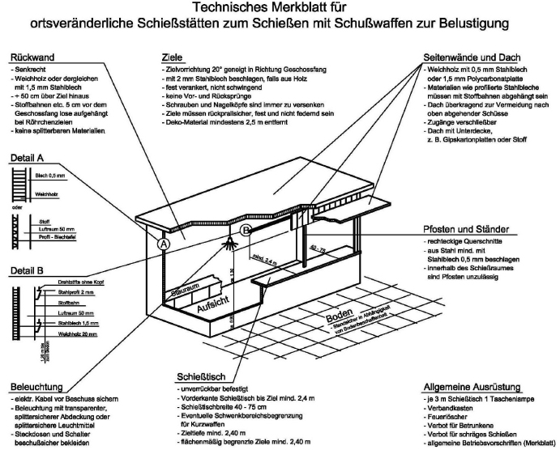
Abbildung 6.5.5 Technisches Merkblatt "Schießbuden"
| 23 | als Büchsen, mit Ausnahme LW in KW-Kalibern |
| 24 | Flinten nur mit Bleischrotmunition mit Durchmesser von ≤ 4 mm |
| 25 | siehe BDS-Sporthandbuch |